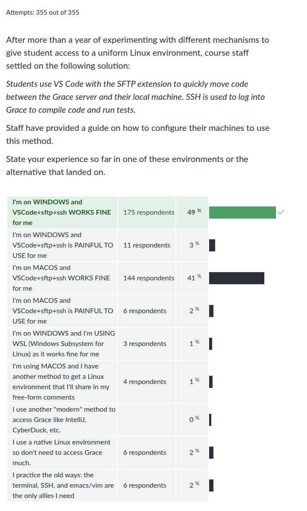
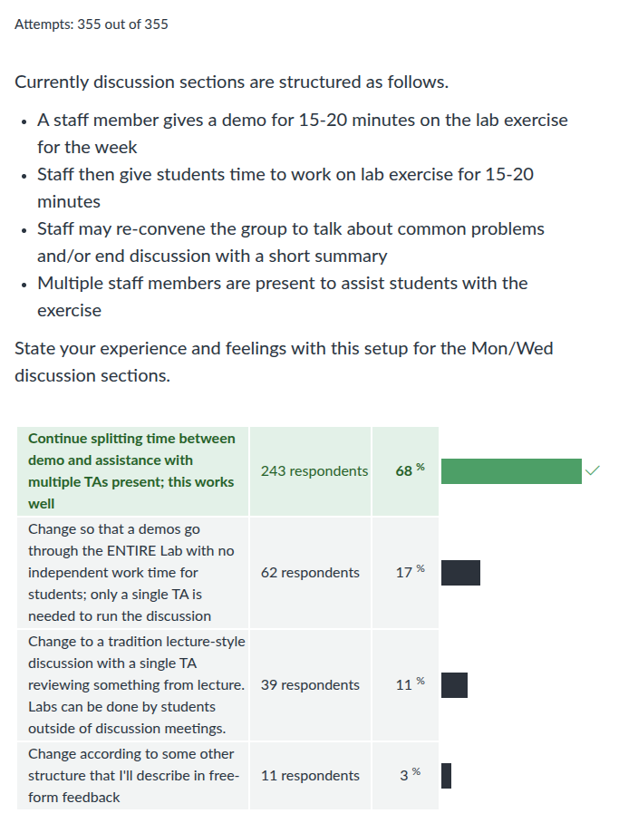
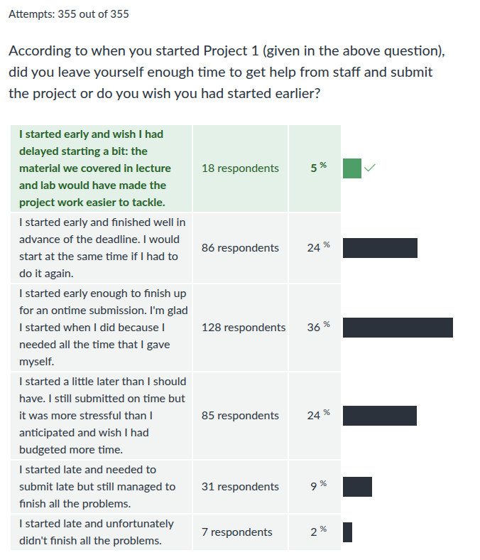

CMSC 216 F2025: Midterm Feedback Survey Results
Table of Contents
Summary Statistics for Multiple Choice Questions









Notable Comments + Responses
Instructor responses are in italics.
General Comments
- I'm struggling with balancing this class in combination with my other rigorous courses, though; this is more of an issue regarding mytime management.
Time management is the most important and longest-serving lesson you'll learn in college. It is not taught in classes but is worth investigating on your own as it will pay great dividends in the long run. Keep on struggling and if you figure it out, let me know as I'm still working on this skill myself.
- CS is tough, and I know I am not the only one who is struggling, but near me, everyone seems to be prepared, but I am not, so sometimes, it is about winning mentality.
Don't get fooled: it's easy for folks to seem more competent but you don't see their struggle, either now or in the past when they learned some of these things earlier than you. CS is infamous for its disparity of experience levels with some students having exposure to computing since their tweens and some only starting in college. The "winning mentality" you alluded to is entirely personal: are you interested in what you are studying and do you enjoy what you are doing? If so, keep at it - that's far more important than comparisons to others.
- I have not been cracking the textbook yet and I will when getting into it when the assembly portion rolls around but it seems dense for me.
That sounds like a good policy. If you're unfamiliar with caches, virtual memory, linking, system calls, and other topics we'll cover, Bryant and O'Hallaron's textbook will also prove useful as an expert resource on those things.
- I think C was easier to learn than I thought. I didn't realize how similar it was to Java.
Most of Java was copied from C and arranged to make the transition from C to Java palatable. I'm glad that design is making your transition in the other direction somewhat easier.
- This class is stressful compared to 132
I expect CMSC330 will be more stressful than this and all 4xx courses more stressful than that. Things get harder but you'll be stronger in each case to meet that challenge.
- I feel that I should be reviewing the content more on my own each day outside of class. Doing a bit of extra work each day will reduce stress by quite a lot come next exam time, so I will definitely improve upon that starting this week.
That's a great plan. Daily effort leads to improvement. We laud those that lift or run or practice their instrument every day as we know implicitly that in 6 months they'll be better at those things. We laugh at someone proposing to lift weights for 18 hours to get strong by the next day. Academic study is no different. So practice daily.
- I feel lost and I don't know why
Find someone to talk to about it. I'm available, email me to set up an appointment. Don't stay lost. Get help from staff. Make some effort to find your way.
- I feel like the lectures and discussions are working well in my understanding but thats after i do some research on my own. I would like some more code demonstration like code made from scratch so I can watch along as its being made that makes it easier to follow and understand.
Our time is limited. I'm sorry that the presentations in lecture and discussion are not wholly satisfying. You should know that the general expectation is that EVERYONE will need to do some studying and practice on their own. It's a common misconception that a student can just sit in meetings and become capable. Keep coding on your own to get practice and you'll become very capable indeed.
- I'm lucky that I have some experience with C, as I have a feeling this class would quite difficult if I didn't.
- I think overall the pace of this class is good and fair to people with little to no experience with C.
This course is geared towards folks who have programmed but no in C. Glad to hear that for at least some folks, that tuning is on pitch.
- I think the OH are the best resource to the course. All the TAs are so helpful and work diligently with the students.
Glad to hear it.
- I am frustrated with the availability of office hours. I have not attended any because they all end before 4pm and that is times where most people have classes. I am booked completely during those hours which makes it impossible to get help at office hours.
Sorry that TA office hours are not working out for you. From your comments, your full schedule would indeed interfere with attending office hours. That's the price of doing a lot: others won't necessarily have compatible schedules for you. Attend your discussion section and get help there as you are able.
- I have forgotten the prerequisites a bit and i'm a little behind and i don't know what to do i'm scared
That is a concern as we expect folks have 1 year of college-level programming experience. This course will be difficult without that. Make an appointment to see me about how to proceed and perhaps we can address some of your fears.
- I'm struggling whether or not computer science as a whole is right for me. I keep seeing people have a much firmer understanding of these subjects and it makes me doubt myself constantly. I don't know if I could do it without the guidance of others.
If you enjoy what you are doing, keep at it. You're paying some tuition to get the assistance of teachers and staff to educate you. That money is intended to make it faster to learn than what you could do with just library card. Lean on your teachers to help you get better. That's our job and most of us want to help.
- I really appreciate all of the regular practice we receive (Homework Quizzes and Questions, Labs, etc.) and find that they are helping drive home concepts we discuss in lecture, allowing for low-stakes, hands-on practice. However, I feel that these are perhaps more necessary for me then they should be.
Practice is necessary for everyone. Don't doubt it, just do it. I'm glad the practice we provide is helping you learn.
- Most of my learning occurs on my own time through practice and study. This isn't necessarily a new thing for me in the CS program, but it would be nice to come out of lecture feeling a bit more confident in my understanding and retention of the new material (more explanatory slides, more time devoted to new concepts, lower-level explanations, etc.)
Different tactics work for different folks. It is important that you figure out what works for you as no one else can. The course structure is meant to provide a variety of different mechanisms by which students can learn content so as to enable the most possible students to achieve competence. If certain activities don't do as much for you, minimize the time you spend on them. Continue to do what you find helps you improve.
Tech Setup
- I think the virtual environment provides a bit of inconvenience/learning to use that makes it a little more difficult to test code than directly on a code editor.
There's not too much "virtual" about our environment. You connect to a machine (GRACE), that machine has a compiler, you compile and run your code there. Java's "virtual machine" (JVM) is somewhat more virtual than GRACE in that regard. Code editors don't compile and run code. You need a compiler and a computer to run compiled code. I'd hope that's clear by now in the course. I admit that the remote aspect of GRACe is somewhat less direct than being able to use your own local system for development. Consider looking at alternatives that would enable local development if that's too off-putting. You'd likely learn a few things along the way on setting this up and become more capable on account of it. Or just get the most of learning to do remote development, an important industry skill.
- I wish there was a way to avoid duo authentication every single time.
You and me both. I've been pestering the GRACE admins for two years about how we can make this easier. They've yet to do much to help. GRACE is the only server I've encountered that lacks any facility to automate at least some parts of the login. You can turn on a VPN to UMD's global connect and this bypasses the 2-factor portion of login but you'll still need to type your password in.
- I'm on macos and use Xcode plus the Transmit app, as I hate how much ai is pushed in VSCode
I'm also not to big on VS Code but it is the editor du jour. I'm glad you found a personalized solution that works for you. That's the oft-forgotten joy of computers: they're supposed to serve and fit us.
- I'm a MacOS user and I found that Github Codespaces has been a great way for me to access a linux environment without having to deal with the pain and suffering of Macs. It's web based (which will likely be looked down upon) but it comes equipped with all the command line tools I'd ever need.
Weigh in at the end of the semester to let us know if this works out alright for the assembly coding we're now on about. As long as the VMs used by Codespaces are run on x86-64 hardware machines, probably all will be well. However, the reason I've not gotten a Docker solution to work for CMSC216 is that when you run a VM on ARM systems, things get funky with a different assembly language.
- …Valgrind is awesome.
Damn straight. It has alternatives though. As you move beyond this course, check out the Address Sanitizer project which accomplishes similar ends with some more efficiency and has GCC support.
Discussion and Labs
- TA's running through the whole lab would be a huge benefit, I often find small bugs/errors and I wish I had some help. I would still learn it but it would be in a more teach-able way.
- I think the in person lab demos should be even shorter like 5 - 10 mins unless you plan to take out the lab demo vids. more time for questions and independent work is best.
- I would rather have the entire discussion time dedicated to the lab, or the entire time being a walkthrough, as splitting time is a little bit inefficient in my opinion.
Opinions on time allocation within the discussion sections varies. A multiple choice part of the survey asked about this and the largest fraction of students (68%) indicated that the current structure of discussions works well enough and should be continued. Sorry that doesn't please those commenting above but they say the sign of a good compromise is that no one is entirely happy.
- I think the questions on the labs are very frustrating especially when it feels like I have the all correct, but I am missing some questions. I do not know which question I have in correct and there is no good way to guess and check.
Seven or so folks mentioned this in free-form feedback, that completing Lab QUIZ questions is hard as it's an all-or-nothing affair with no guidance on what might be wrong. I'll think on how we might modify this BUT the intention is that the QUIZ is a bit harder and requires you to really know what's happening. Staff are under instructions to help students work through these issues when they arise so don't be afraid to ask for help.
- I think that the TA's should go over the questions either during discussions or they should go over them in the videos.
I'll mention this to TAs who record videos as it may indeed provide the escape hatch that students struggling with lab QUIZ questions are looking for.
- While I HATE going to my 8am discussion because it's so damn early, I still find the discussions so useful that I go to them anyways. This is because the TAs give you so much help with the labs during discussion that it genuinely saves me a lot of time on those assignments. The fact that I am willing to power through an 8am discussion (that has optional attendance) out of all things means that you guys are doing something right with discussions.
High compliments that I'll relay to the 8am TAs.
- This is minor problem of mine but the way the seats are arranged in the discussion sections room is quite awkward. I'd prefer a screen at the front and everyone looking straight with the desks arranged linearly. Half the time I can't tell if someone is staring into my soul or look into the screens behind me.
I find the arrangement in IRB discussion rooms also to be disorienting. Some TAs in the past have expressed preference for AVW rooms which are more lecture-style with a single screen up front. Unfortunately there's not much that can be done about it at the moment. Try to find a seat that focuses your attention on a single screen.
- HW and Labs don't punish you; they help you learn and earn free points.
If you have to earn it, it's not free. However, I get your sentiment, that the incentives to do Labs/HWs match well with the benefit you get from them.
- These past review sessions were super helpful I would love if we had warm up questions like them in disscussion at least once a week.
I'll discuss that with TAs. We have this semester focused on increasing the rigor of Labs somewhat but there may yet be some space for "warmup" questions in discussion.
Exam 1
- I don't always know what to focus on and what not to for optimizing my performance on the exam.
Focus on what's been discussed in lecture, labs, projects, and HWs.
- Spent a lot of time going over lab 4 and makefiles but that didn't appear at all, and I feel I could've used that time for other content/skills that would've helped me do better.
- I would benefit from answers to the HW question files being posted. The HWs were helpful to review when studying for the exam and it would have been nice to be able to check solutions easily.
- I think reviewing my code for the project beforehand really helped me during the midterm but there are still syntax issues I struggle with.
- Before exams what really helped me is a in-depth list of topic that will be covered… I was given a list like this for both 131 and 132 and it seemed to help me plenty.
- I believe it will be helpful if we can have more little review questions to do.
- More practice problems would help
Show me your HW answers. If it looks like you've spent time on them, I'll consider giving you more practice.
- I struggle with finding relevant practice problems on my own… The exam was much harder than I was expecting, and the material that was given to me (1a and 1b practice) was way easier than the actual exam. I wish that there were more materials to study from and more practice tests. And yes, I do the HW questions.
Come see me. Make an appointment and I'll attempt to provide perspective an possibly more practice. I do not agree with you that the practice exams were "way easier" than the actual exam. We'd need to sort out why you feel that way and I don't. Once we understand that divergence, we can probably find a way for you to avoid that feeling of under-preparedness for the next exam.
Lecture
- I don't like how most of lecture is spent answering questions. I feel like I'm not actually learning as much since students are compelled to ask questions for a grade.
False. Most of lecture is me talking, asking students questions, and providing exercises. Students have questions sometimes and I answer them. When students ask irrelevant questions, I say as much and we move away from that quickly. However most questions I field are very reasonable and deserving of the small amount of bonus credit they are awarded as they enrich the conversation we have in lecture.
I'm sorry that you don't share the same questions. That is one disadvantage of being in a large course: yours are not the only desires that get consideration. There are several alternatives including skipping lecture and watching the videos which would allow you to quickly bypass question from others. You might also leave the university and hire a private one-on-one tutor who will move at your pace sparing you the need to deal at all with other people's questions. I'll caution you that both these will rob you of opportunities practicing patience and curiosity, two skills that are universally powerful. A third alternative might be to form your own questions and ask them in lecture. That'll earn you some bonus credit and contribute to the conversation.
Forming questions while you listen is an OUTSTANDING way to test whether you're properly engaging with the discussion or are just a passive observer. Even if my response to a "dumb" question is "I covered what you just asked 5 minutes ago" informs the asker (and everyone around them) that their attention lapsed. A diligent student receiving such a response will practice focusing more thoroughly. Aside from that type of question, I rarely get "dumb" questions, just inquiries that help to clarify which is valuable for everyone.
In spring 2025, I asked students in an anonymous poll like this one whether they asked questions in lecture due to curiosity or solely because they could earn points. Of 317 respondents, 3 said they frequently asked just to get points. That is price I am willing to pay as it enabled a culture of inquiry where many times that number of students asked questions out of curiosity. If that bugs you, so be it. This is my operation to run and I like dialogue.
- People could argue that people ask questions just for engagement points but at the same time ive found myself, because asking questions is encouraged with a little bit of bonus credit, asking genuine questions that i have but would not have asked otherwise because it's awkward/embarrassing with the thought of "i'll figure it out on my own" but never really do.
Glad to hear the incentive structure is doing its job. Keep asking. Stay curious.
- I would appreciate it if the question was always repeated out loud to the audience. I find I can't hear people a lot of the time and spend the first 30 seconds of a question's answer reverse engineering what they asked.
I often forget to repeat questions. Thanks for the reminder to do so as I know lots of folks can't hear what students in other parts of the room are saying.
- Additionally, in CMSC131 and 132, my professor would give a 2 minute break halfway through the lecture, which I thought helped me maintain focus for the entire lecture. Because lectures for 216 are longer, I think that a 2 minute break mid-lecture would be helpful.
That's nice of your past instructors but I'm afraid not something I'm willing to do. If you need a break, take one. My expectation is that the natural breaks to work on exercises should be enough for folks to stay focused for 75 minutes.
- I believe I don't get enough out of coding lectures. I find it hard to concentrate and do go on my phone and get distracted which is a me problem.
It is a "me problem" as you put it. It is mature of you to recognize it as such. I try to do some coding here and there but there are lots other things we need to discuss. Try to find ways to refresh your focus. Yours is the generation that us older folks most fear can't pay attention to anything for more than 6 seconds. Prove us wrong. Try, as you listen, to formulate a question about what's being discussed: what are the limits, the special cases, the situations where things might be different. If you hone your imagination to play internally with the model of what's being constructed, you won't need the speaker to be completely entertaining as you can mentally augment their discourse with your own accouterments.
- I enjoy the extra credit, but I feel that the log2 system, while good at the beginning, slowly tapers off and makes it feel less rewarding to ask/answer questions. While I'm sure it is important to make sure people can't farm a ton of extra credit, I think changing the formula in some ways could make it more encouraging, even if people get an extra point or two.
Afraid not. "Diminishing returns" are there so as not to skew things too badly away from doing the actual coursework. An alternative is to simply cap the bonus at a certain point but I like logarithms better.
- I have trouble paying attention in lecture, maybe it's cause I've trained myself to consume content at 2x speed that 1x isn't cutting it anymore. Watching the lecture videos on my own time helps me a lot and it's easier to not get distracted by my computer or phone or whatever.
See above. I understand that natural speaking speed may be too slow in some cases but listening patiently is a good skill to develop. Try going at normal speed from time to time at least to practice this.
- I also think it would be cool if a few minutes were spent talking about real-world examples of how the stuff we're learning in class would be used. For example, in CMSC132, the professor mentioned that stacks can be used for implementing the undo/redo functionality in text documents and it made it more interesting.
We delve into applications hear and there but generally at this stage, they are still somewhat far away. Stacks can be useful for undo/redo but you need two of them along with a way to encode what is being done/undone and the data that manipulates it. I taught a course years ago that implemented this in a limited setting and students were surprised by how much more needed to happen aside from the stacks involved to enable this kind of functionality. Great practice for coders but it's not something that I'd expect of students in a 1xx or 2xx course, more a 3xx or 4xx course. Come see me if you want some insight on it.
As our course continues, you might see some more applications. Pay attention to Projects as they are ALL applications and reminiscent of a "real world" program.
Project 1
- I like the structure of labs and hw quizzes, because it means projects are generally less frequent but larger in scale.
That is the intent. Projects take several sittings to complete. You need different skills in such a setting than the skills that allow one to finish small-ish code in a single sitting.
- need more focused practice on topics rather than many topics integrated into assignments
If you can isolate the topics you'd like to focus on, I can help but generally the Labs and HWs are more focused on single topics than projects.
- The project instructions are a pain to read, just a paragraph of comments is one of the worst was to get information across. Also some instructions for project were not clear.
- The project description was detailed enough to allow me to understand what I needed to code.
If folks have specific criticisms of parts of the project they think could be explained better, I'm happy to receive them and try to improve. Send me mail or see me in office hours. Rest assured that the descriptions of what to do get more and more vague as you advance so practice figuring out what to do based on nebulous client input is a great software engineering skill.
- One thing I'll note is I feel the project, while very comprehensive, feels a little strict with the implementation. It felt like there was only one very specific way to approach the function implementations. I think for future projects there should be a lot less strict implementation details, since that led to some problems like the issue with the rounding in the plot/multiplot.
This project is particularly strict with some of the numerics as I've had trouble in past semesters and this one with the floating point rounding and don't want students to get too pinched by it. The general character of my projects in these large classes is that there is a design that we thrust on students and not much room to deviate from it. Don't expect that to change much for future projects in the course. That choice addresses my primary concerns:
- We have certain learning goals and to ensure those are exposed in projects, the design is constrained.
- We have a LOT of students so some amount of automatic grading and a pattern for manual grading is necessary to handle the volume ruling out free-form designs.
- I don't expect students to be able to design things at this stage in their career. Rather, they should be studying simple designs of more experienced folks so that they learn some basic patterns.
I'd encourage you to take this project and extend it yourself. Consider a different design, build on the multiplotting, allowing for horizontal vs vertical printing, the sky's the limit. That will allow you to explore and learn and potentially scratch the creative itch you developed here. Also, interviewers love it when you have your own projects rather than just what you've been forced to do through coursework.
- Thank you so much for not making secret tests and making us make our own….
Secret tests are stupid. I'll fight anyone who says otherwise. And I'll win.
- I spent a lot of my time working on the project and I didn't get to study for the exam as much as I would have liked.
Working on the project IS studying for the exam. Just look at the exam coding questions which could be readily answered by anyone who solved the project and saw the analogies.
- I feel the projects take much more time to complete compared to the projects that I did for 131/132.
Yes, they do. 3xx courses will probably take more time again, and 4xx courses more than that. Things get harder but you're getting stronger too.
The Weird Ones
- Wish we could stay in c…
I understand, but C does not stay in C, it becomes something else. It's good to understand what that something else looks like as it'll make you more appreciative of the times you can code at higher levels.
- ..and most importantly finish this course and say with all the pride in the world that "I use arch btw."
Who am I to judge those who aspire to become a meme…
- Tire Pressure is good
Let's just hope the wheels don't come off…
- studying, but tests i didnt lik
I hope you didn't lick the tet. That'd be unsanitary. For you and for me.